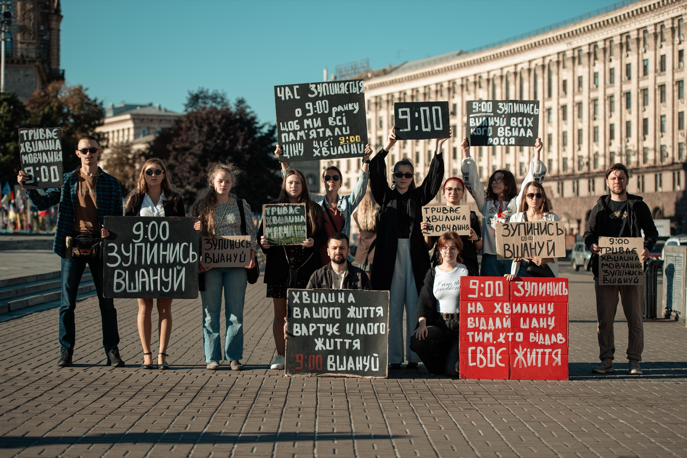

Місія та цінності.
Жодна країна не народжується з готовою культурою памʼяті — її формують роками. Україна проходить цей шлях зараз, і ми його частина.


В основі «Вшануй» — переконання Ірини (Чеки) Цибух: памʼять не завершується датою в календарі. Вона живе в повсякденні — у вдячності, що триває, в людях, які несуть спогади, і в ритуалах.
Після загибелі Ірини у травні 2024 року її справу продовжила команда однодумців. Сьогодні ГО «Вшануй» розвиває ідею сучасної української культури памʼяті — відкритої, людяної та зрозумілої кожному.
ГО «Вшануй» — організація, яка працює над формуванням та впровадженням нових меморіальних практик в Україні. Зокрема, активно адвокує Хвилину мовчання на національному рівні та інші практики памʼяті. А також працює над розвитком активної спільноти у містах по Україні.
Співзасновницею громадської організації була загибла госпітальєрка, журналістка та Герой України посмертно Ірина (Чека) Цибух, яка привертала увагу до питань памʼятання людей, які загинули під час російсько-української війни.
Місія
Памʼятай про полеглих — допомагай живим.
Ми прагнемо, щоб памʼять стала природною частиною повсякденного життя України.
Це наше гасло. Ним визначаємо все, що робимо.
Що ми робимо
-
Досліджуємо
Ми досліджуємо та відроджуємо різноманітні практики, з різних часів та історичних періодів, щоб віднайти саме те, що буде близьким українському суспільству.
-
Створюємо
Ми створюємо практики, які допомагають державі, громадам, бізнесу та кожній людині зробити памʼять частиною життя.
-
Підтримуємо
Ми підтримуємо та допомагаємо зберігати памʼять про наших людей.
Серед наших основних напрямів роботи
-
Громади
Працюємо з громадами та координаторами осередків, допомагаємо створювати й впроваджувати локальні практики памʼяті. Поширюємо ініціативи в громадах, розробляємо ритуали памʼяті та прощання.
-
Бізнес
Допомагаємо бізнесу інтегрувати культуру памʼяті у свої комунікації. Проводимо консультації, аудити, лекції та сесії, щоб компанії могли говорити про війну, втрати й памʼять.
-
Держава
Передаємо державним інституціям напрацьовані практики, рекомендації та інструкції й працюємо над їхнім системним впровадженням.
-
Суспільство
Говоримо про складні й важливі теми, повʼязані з памʼяттю про війну: як прощатися, як говорити про загиблих, як уникати знеособлення втрат.
-
Освіта
Досліджуємо, як діти, підлітки та вчителі сприймають тему памʼяті й якою хочуть бачити розмову про неї в школі. Розробляємо практичні матеріали для освітян, проводимо лекції та зустрічі, створюємо документи-опори для роботи з темою памʼяті.
-
Військо
Досліджуємо військові ритуали й традиції та шукаємо способи зберігати їхню тяглість у сучасному українському війську. Працюємо над створенням церемоній прощання з військовослужбовцями, які можуть бути адаптовані та впроваджені в громадах по всій Україні.
-
Мистецтво
Використовуємо мистецтво як спосіб говорити про памʼять, людей і наш досвід.


Наше бачення
Від культури монументів — до культури відповідальності.
Ми працюємо над тим, щоб в Україні сформувалася культура памʼяті, яка житиме незалежно від нас. Культура, у якій Хвилина мовчання стане природною звичкою, громади самі створюватимуть простори памʼяті, бізнес братиме участь у спільних практиках вдячності, а діти зростатимуть із розумінням того, що свобода має свою ціну.
Наша країна зараз переживає багато змін. І одна з них це те, що ми переходимо від культури монументів до культури відповідальності, де відповідальний кожен з нас.
Підтримати